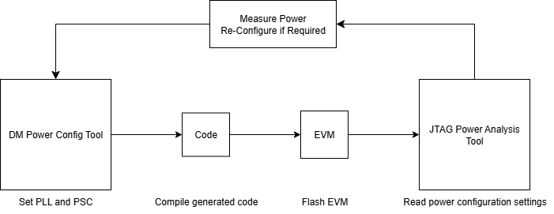

|
J722S MCU+ SDK
11.02.02
|
|
|
J722S MCU+ SDK
11.02.02
|
|
Power tooling enables users to configure power settings, such as PLL and PSC, tailored to their specific use cases. Users can use power tools in tandem to achieve this. The JTAG power analysis tool is used to analyze the power settings. This information is then used to refine the configuration via the DM power config tool. Users can significantly reduce power consumption by selecting which IPs and modules to activate or deactivate and adjusting their frequencies. For setups without a JTAG interface, the DM power analysis tool serves as an alternative to the JTAG power analysis tool, providing the same power settings information.

This tool is used to get the power settings of the SoC at any instance using the JTAG interface. Users can get the IP frequencies, PLL settings, PSC status, and clock tree of the SoC. Refer JTAG Power Analysis Tool
This tool provides a GUI to configure the IP frequencies and turn the PSC of various modules on/off. Refer DM Power Configuration Tool User Guide
The DM Power Analysis Tool is used to obtain the PLL and divider settings, PSC status, and clock tree of the SoC. It is a C-based tool that doesn't require a JTAG connection. It runs on one of the cores in the device. The PLL and divider configuration is obtained by reading the control registers, and the clock tree is obtained using the Power Management Clock API. Refer DM Power Analysis Tool
| Tool | J784S4 | J722S | J721S2 | J721E | J7200 |
|---|---|---|---|---|---|
| DM Power Config Tool | ✓ | ✓ | ✓ | ✗ | ✗ |
| JTAG Power Analysis Tool | ✓ | ✓ | ✓ | ✓ | ✓ |
| DM Power Analysis Tool | ✓ | ✓ | ✓ | ✓ | ✓ |
| Feature | J784S4 | J722S | J721S2 | J721E | J7200 |
|---|---|---|---|---|---|
| PET | ✓ | ✓ | ✓ | ✗ | ✗ |
| PLL | ✓ | ✓ | ✓ | ✓ | ✓ |
| PSC | ✓ | ✓ | ✓ | ✓ | ✓ |
| CLOCK-TREE | ✓ | ✓ | ✓ | ✓ | ✓ |
| Feature | CCS20 | CCS12 | Trace32 |
|---|---|---|---|
| PET | ✓ | ✓ | ✓ |
| PLL | ✓ | ✓ | ✓ |
| PSC | ✓ | ✓ | ✓ |
| CLOCK-TREE | ✓ | ✓ | ✓ |
| JUNCTION TEMPERATURE | ✓ | ✗ | ✗ |
✓ = Supported ✗ = Not Supported
 1.8.20
1.8.20